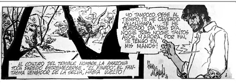

lunes, 12 de septiembre de 2022
Historietistas de fiesta, es día de la Historieta peruana
La declaración por el día de la Historieta Peruana fue realizada un 12 de octubre del 2008, este vídeo nos muestra este celebré acto en el Hotel Maury . Viva la Historieta Peruana!
Publicado por Javier Prado
Etiquetas:Youtube
domingo, 11 de septiembre de 202222
La mejor historieta peruana de aventuras, Selva Misteriosa de Javier Flórez del Águila
Un 1 de noviembre de 1971, hace 51 años atras, aparece en la página de Amenidades de "El Comercio" la tira N° 1 de la historieta "Selva Misteriosa", que daba inicio con la historia de "El Finado". Firmada por el joven médico neurólogo Javier Flórez del Águila, que con un extraordinario trazo y manejo del claroscuro tomo a la Selva peruana como el gran escenario así se abrió las puertas maduramente a una historieta más realista y moderna. Un hito de la historieta peruana que todos deben de conocer.
El doctor Javier Flórez del Águila es uno de los referentes de la historieta peruana, su formación profesional, cultura y grandes referentes para la imagen como Alex Raymond, Milton Caniff, o Breccia maestros de figuras de mucho dinamismo y alto contraste, literariamente indagó en las novelas de Arturo Hernández como "Sangama" y "Selva trágica" además de cuentos cortos de Francisco Izquierdo Ríos como "Los Cuentos de Adán Torres", "Gavicho", "Sinti, el viborero", "Selva y otros cuentos" y "Muyuna".
El Dr. Flórez en esos momentos trabajaba como médico asistente en el departamento de Neurología de un centro hospitalario de Lima por las mañanas y por las tardes prestaba atención ambulatoria en un centro especializado en niños con sordera, afasia infantil y autismo dos veces a la semana y aparte de la atención privada en su consultorio tres veces a la semana. Y en su tiempo libre dictaba un curso básico de Neuropsicología en la facultad de Psicología de la PUCP. Aun con todo eso decidió dibujar por las noches lo que es sin duda el hito que marca a la historieta moderna, con personajes psicológicamente bien definidos, composiciones de tira dinámicas, gran manejo de la elipsis narrativas, y es sin dudas la primera historieta donde la aventura fantástica cobra verosimilitud por la gran cantidad de referentes reales.